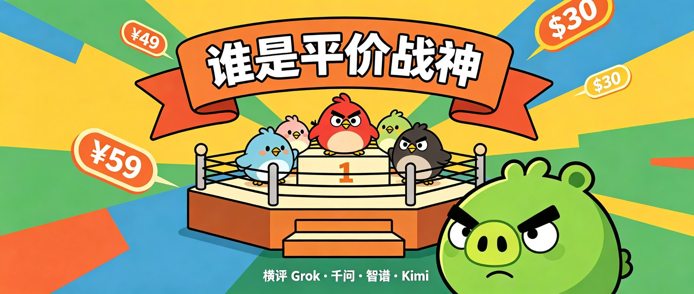
Fable 5和 GPT 5.6很强大家都知道。
但他们太贵了，还要解决网络问题、付费问题，还有封号风险
顾虑费用的小伙伴，可以看看这期平价高分模型的横评。
我先去AI榜单找到智力排名前10的模型。
上榜的有这几家Claude、GPT、Kimi、Grok 、GLM 和Muse。
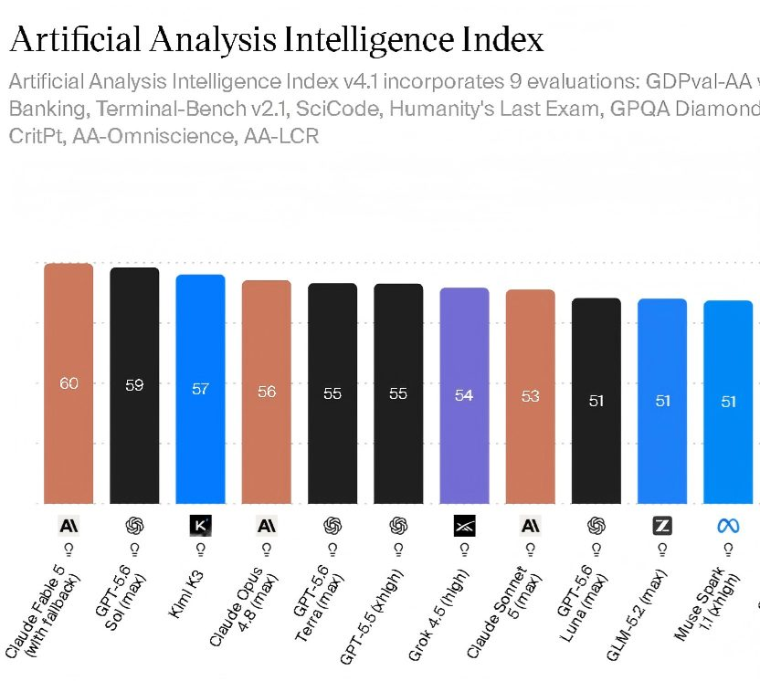
按榜单给出的成本，我从后向前找，最便宜的居然是GPT-5.6 Luna。
然后是Meta的Muse Spark 1.1 ，马斯克的Grok 4.5，和智谱的GLM-5.2。
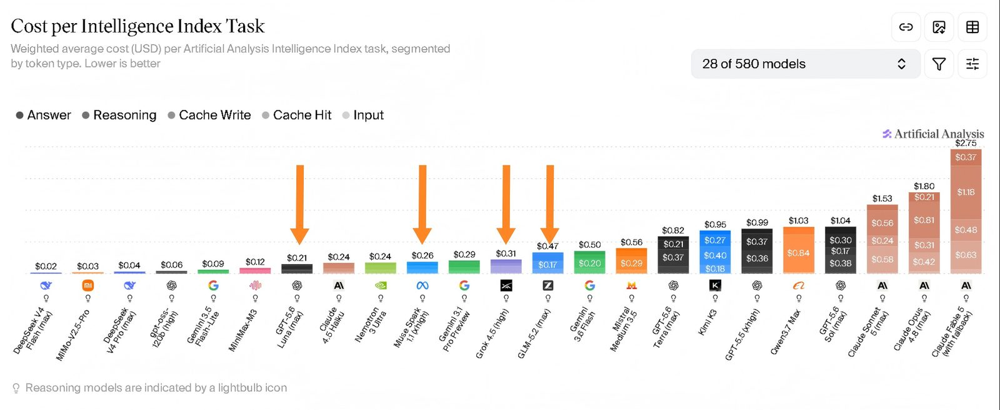
比如Grok 4.5智力排名第5，而价格只有Fable 5的9分之1。
那这几家便宜得多的模型里，哪个是比较好的选择呢，今天咱就来比一比。
我在X上看到个很好笑的说法：愤怒的小鸟，是AI的新Hello World。
你别说，我这一测试，发现网友说的真对，模型能力高低，一比就不同了。
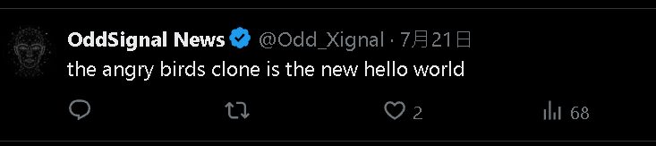
我先给又快又便宜的Grok 4.5，要求它去模仿一个愤怒的小鸟。
毕竟是排名第5的模型呀，而且是用上Cursor收集的大量数据训练的，我期待还蛮高的。
结果差点没给我笑岔气。
Grok 做出来的游戏不用打，刚一开始猪就自己被房子砸死了，全部秒通关！
换个角度，这又何尝不是一种解压游戏呢，哈哈哈。
眼看他起高楼，诶？怎么还没宴宾客呢，楼就塌了。
都说Grok 4.5输出快，这快是真快，但你这对么 Grok兄弟？
我马上指出游戏的问题，让它修改。
结果第2版还是不行，猪猪还会被砸死，或者和木头石块镶在一起，疯狂抖动。
这就是全村唯一去过夜店的猪么。
我盯着Grok迭代到第4版，猪猪们终于不会被自己的家给砸死了。
猪猪可太不容易了，安得广厦千万间呀。
但打开游戏我一玩，诶，你说神不神奇，根本打不着。
小鸟的弹道够不着猪。
我看着躺平在地上沉思的小鸟，感受到了它的超然和解脱，原来是款哲学游戏呀。
Grok你做的游戏是用来感受的，而不是玩的对么，我懂你。
好在还能选关，我点开后面的关卡，有的倒是能玩了，但全得靠加速鸟才能通关。
加速鸟那叫一个摧枯拉朽，横扫千军呀。
不愧马斯克是造火箭的，这加速度就是快。
Grok这一版版的改，你说慢吧，人家终端里咔咔蹦代码。
但是每一版都要我来发现和提出问题，最终耗时50分钟。
咱高情商的说，有待提高呀。
看了最逗的，我们看看表现不错的。
千问 3.8 Max，虽然它还是preview，没出现在AI榜单里。
但是在阿里的Qoder客户端里，它的消耗只要0.05倍，夜间甚至低至0.01倍！
而能力上阿里官方声称，可能是除了 Claude Fable 5 外最强。
所以也是不错的低价模型选择。
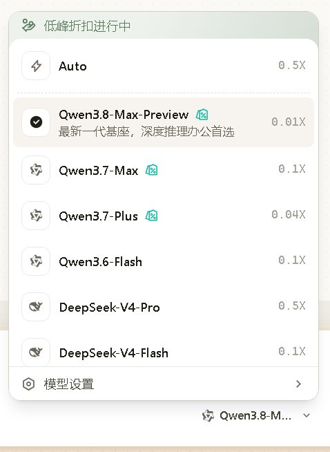
那咱们就上手感受下。
同样愤怒的小鸟模仿，没想到，千问居然一遍就能玩了。
表现明显好于Grok，碰撞效果、建筑物的晃动、不同材质的破坏差异，都挺还原。
而且不同于Grok，需要我发现bug。
千问能自己在测试过程中截图，发现问题，可见其Computer Use功能更完善。
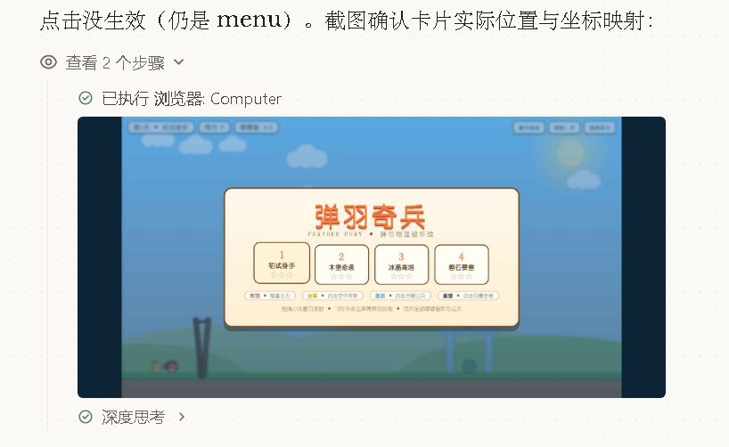
虽是一把过，但耗时也并不短，32分钟，可能正是因为它测试多吧。
千问 3.8 Max挺厉害的！
但别着急，我发现最强的还不是它。
然后我们看看智谱的GLM 5.2。
先说说为什么不用更便宜的GPT-5.6 Luna和Muse Spark 1.1呢。
GPT的充值现在太费劲了，内地的信用卡都会直接拒绝。
而Meta的这个Muse Saprk，不能在其自己的客户端中订阅，要单独买API。
所以我还是选择国内用户较为友好的智谱吧，不过GPT-5.6 Luna，后面也有对比测试的。
好的，同样愤怒的小鸟交给智谱GLM 5.2，竟然也是一把出。
只是我这一上手，发现这游戏怎么耍我呢。
弹弓的弹力，远高于游戏给出的轨迹线。
我瞄着猪，结果一下给我飞到地图尽头了。
不过，这建筑物的物理效果，做得挺不错。
操作手感，和鸟的技能释放也都运行正常。
但是第二关的建筑物也是和Grok情况相识，我还没动手，就自己倒了。
怎么，这是为了显得我枪法准么？
接着，我们来看看当红炸子鸡，Kimi K3。
Kimi确实没前面的Grok、千问、智谱便宜哈，所以是作为对比展示。
同样的prompt，Kimi直接跑了53分钟。
一上手，马上给我震撼了，那丝滑的手感，和物理碰撞，流畅的技能释放。
还有小猪落地时的伤害，以及受伤后x_x状的表情。
我这不就是在玩原版么？
可以看出，在整个过程中，Kimi反复进行了大量测试。
它自己说的，物理测试 60/60 全绿，然后才结束的。
我也碰巧在它工作中，看到了它做的早期版本。
其他模型遇到的什么建筑物会塌，弹弓飞不出去，这些bug 在Kimi做的早期版本也有。
所以，能交付出这么好的结果，不是说Kimi比别人聪明到能一遍想清楚。
是它比别人认真，别人做完就交卷，或者检查过几题。
而Kimi是在那反复检查，保证全对才举手。
不亏是咱开源的扛把子，这结果我服了。
想到Kimi没有Grok那样海量的Cursor数据加持，真的得赞叹，他们的算法创新太优秀了！
然后，前十名模型里最便宜的GPT-5.6 Luna我也试了。
多说一句哈，我都是按榜单里的推理强度测试的，比如GPT-5.6 Luna开得是Max。
也是在各家的客户端跑的，比如luna就是在ChatGPT客户端，可没有偏袒了谁。
结果呢，5.6 Luna远不如Kimi，建筑物跟铁板一样，而且一条腿也能屹立不倒。
看着GPT-5.6 Luna那么便宜，只有Kimi的1/5，而他的大哥Sol排名又这么高，我还期待它可以来个惊艳全场呢。
没想到，却撞上铁板了，表现还不如千问和智谱。
最后，愤怒的小鸟排名：Kimi K3 > 千问3.8 ≈ 智谱5.2 > Grok 4.5≈ GPT-5.6 Luna。
小小一个愤怒的小鸟，居然真能测出模型的高低，太有意思了。
除了模型能力，我觉得选择模型时，各家客户端的易用性，也非常值考虑。
千问、智谱和 Grok，自家的客户端分别叫Qoder、Zcode和Grok build。
使用起来，还是相当不同的。
Grok build是命令行界面。
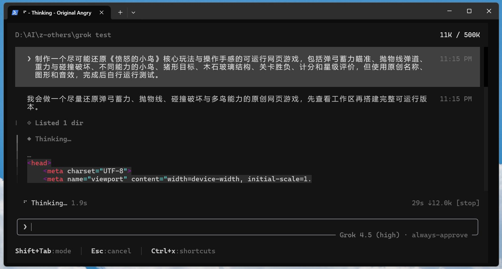
风格极简，但对非码农可能不太友好。
需要你记住不少斜杠命令，才能调用它的各个常用技能，而不是有可点击的图形选项。
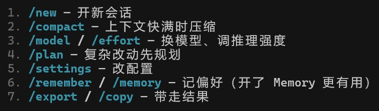
而且默认设置里，居然不隐藏代码编写过程。
哗啦啦给你输出一大堆，回看历史对话时简直心态爆炸。
好在代码显示是可以关掉的，而且所有这些设置，和指令，你也可以现问Grok，并且让它替你改。
但是像客户端字体，背景颜色呀，就不要想了。
纯纯的毛坯房。
不过听说Grok也快要推出图形客户端了，AI领域真是卷得太快了，一个月要当一年过呀。
而阿里的Qoder客户端，就友好多了。
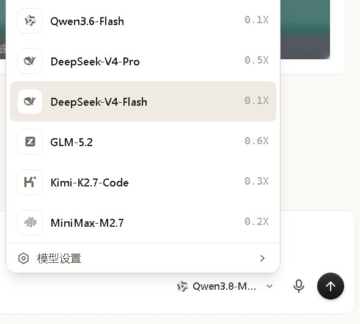
有语音输入，有历史会话目录条。
可以设置字体、主题颜色，可以置顶任务。
而且额度消耗，没有几小时，或者周的时间段限制，只有整月的。
整体体验不错。
不过Qoder可选的模型里没有Kimi K3，这很难受。
我看腾讯的workbuddy和字节的Trae，都有K3可选了。
是不是怕K3抢了千问 3.8的风头呀？
而腾讯和字节是不是自知和K3差得多，索性不用愁了，哈哈哈。
然后是智谱的ZCode，除了没有语音输入，其他Qoder有的它也大部分有。
而且智谱是有自己的语音输入法的，另外下就行了，免费，而且很好用。
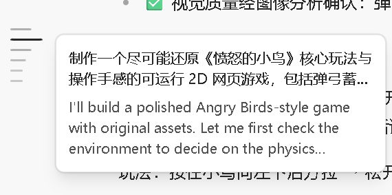
不过智谱的模型消耗是有分时段限制的，五小时、每周都有限定额度。
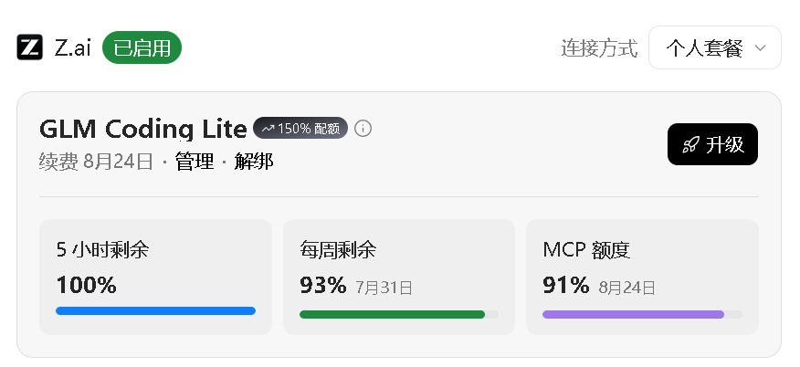
而且我看的时候，国内版会员已经售罄，但我发现Zcode上还可以开通国外版，不过要交刀乐$。
最后，咱们总体看下来，这三家便宜管饱的模型，能力还是不错的。
确实没有Kimi K3强，但你看GPT 5.6 luna第一轮也栽了跟头不是？
所以最后能做出可玩的游戏，说明千问、智谱、Grok都是有足够交付力的。
在Claude要封号，GPT充不上，Kimi买不着的时候。
又或者你用上了，但额度光速告罄的时候。
这几家高分低价的模型，是值得大家考虑的。
三家月套餐，最低档的价格是千问59人民币，智谱国内49，国外129人民币，Grok，30美元，216人民币。
多扯一点。
昨天我想取消Grok的订阅，你猜怎么着，Grok直接跟我说未来三个月只收我一个月的钱。
它真的好想让我白嫖它呀，我哭死。
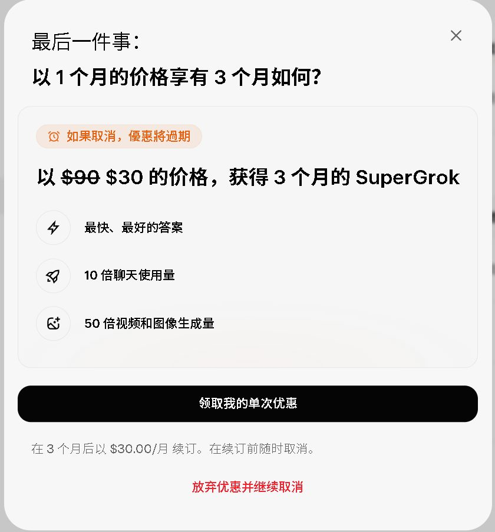
而且Grok的充值难度，以及对网络的要求，可比GPT和Anthropic随意多了。
当然还是得说，Grok没出图形客户端前，非硬核玩家还是要避开难用的命令行界面。
但我看Grok的在线页面，是有云端沙盒环境的，所以轻量化的文件，也可以用网页端处理。
不想折腾网络的话，千问和智谱当然是最方便的选择。
好啦，就到这。
希望各位大神也可以在评论区说说，自己选出的平价战神又是哪些呢？